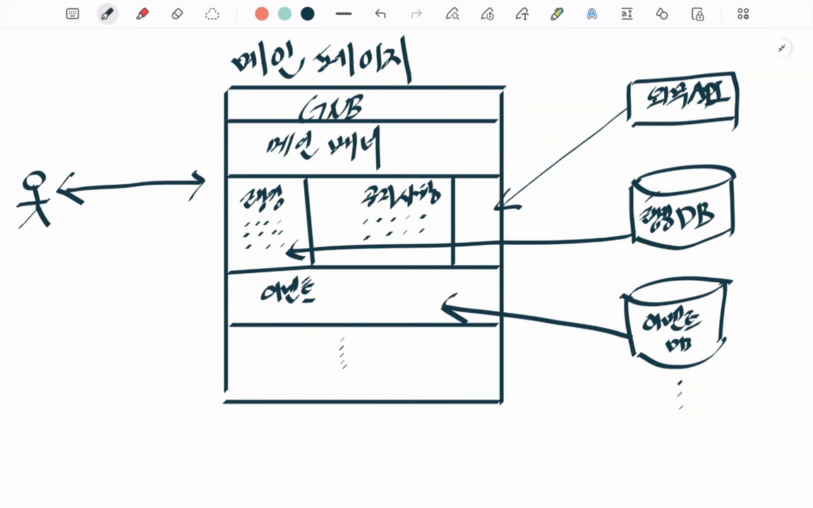
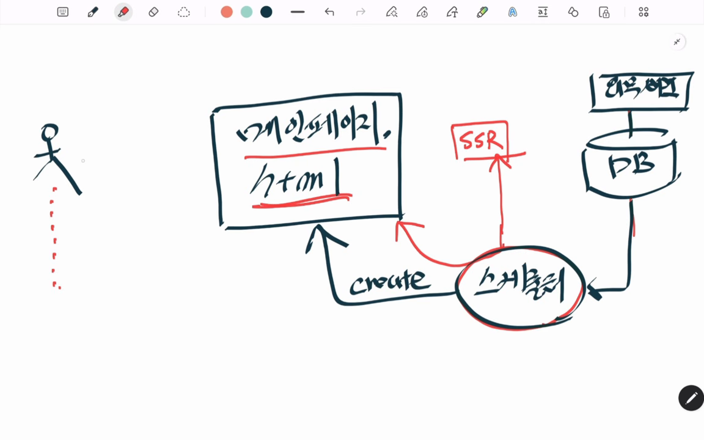
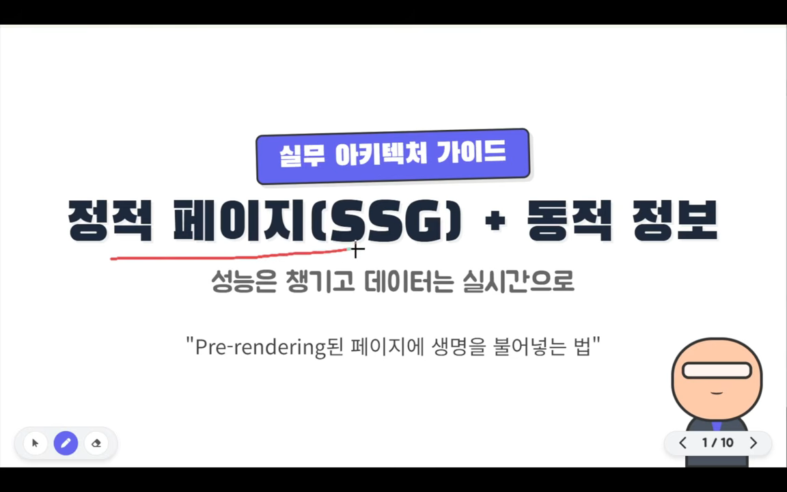
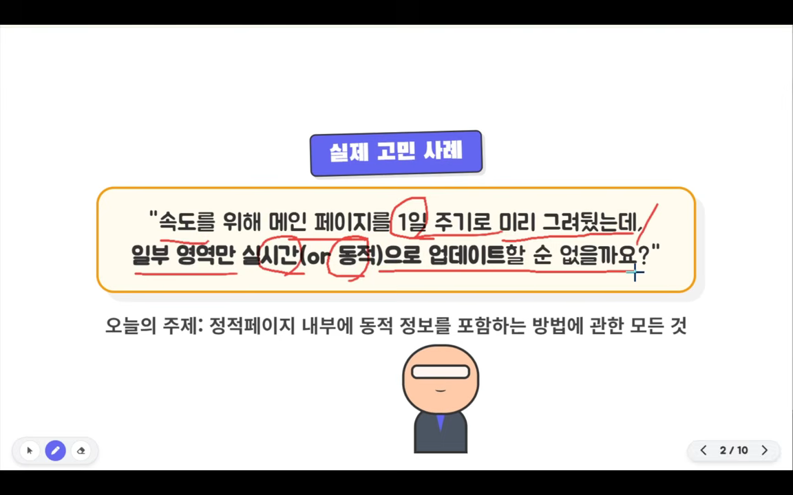
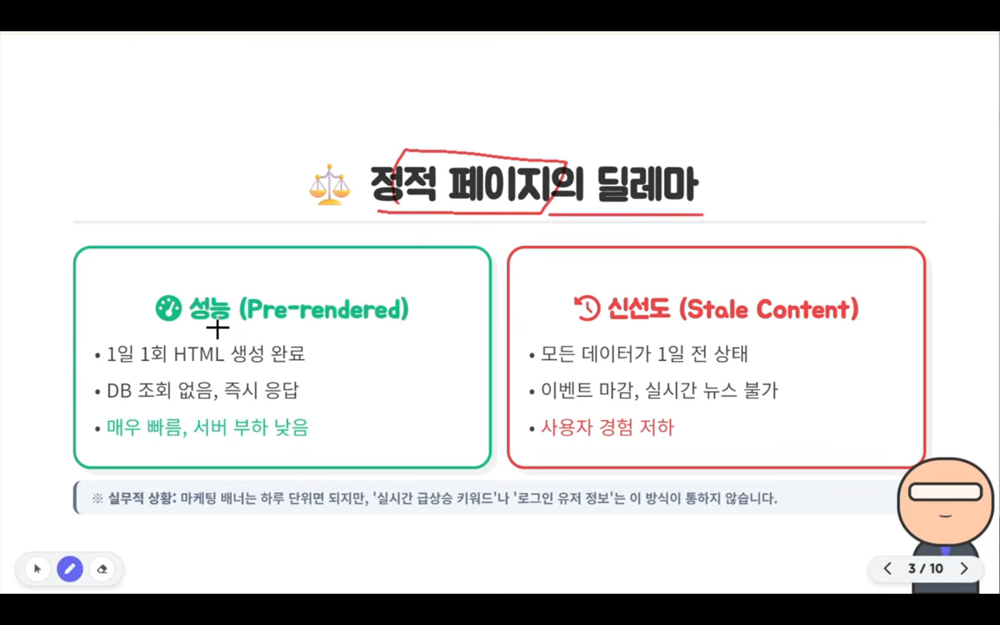
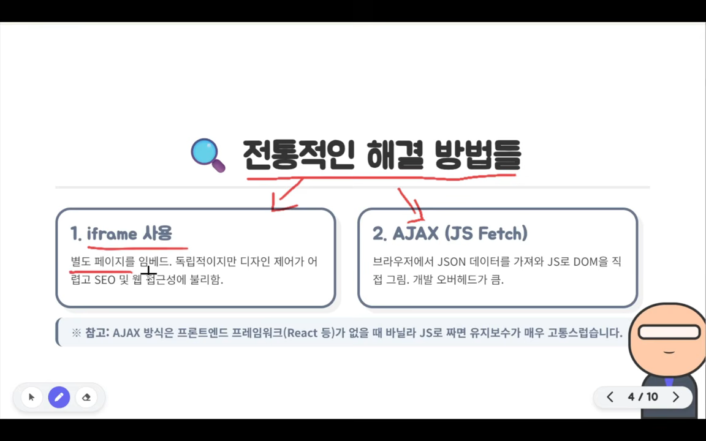
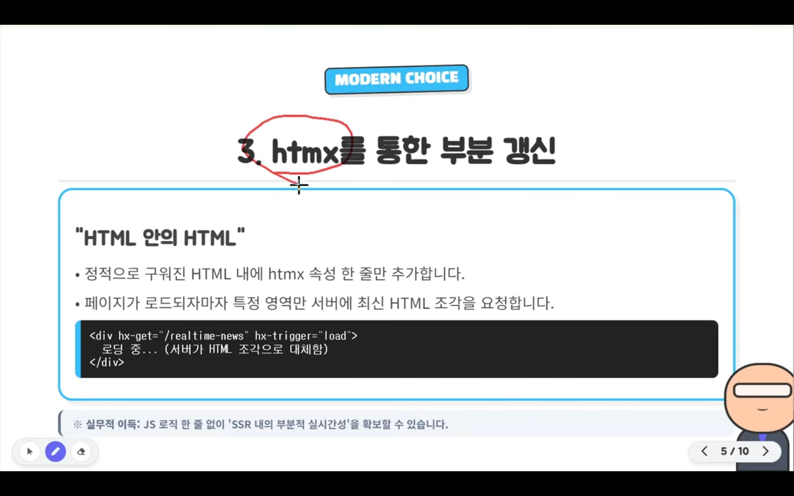
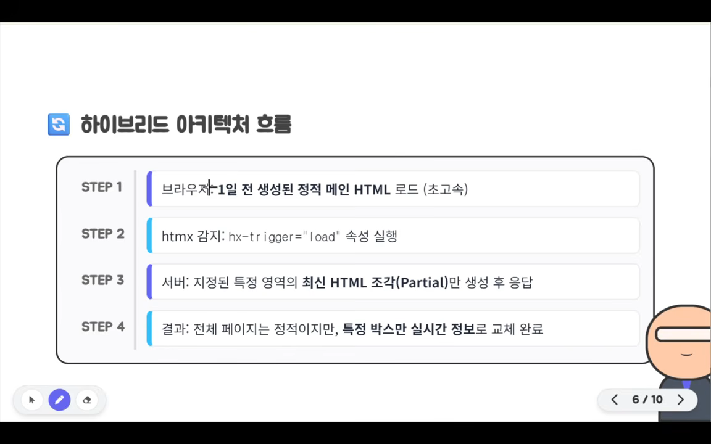
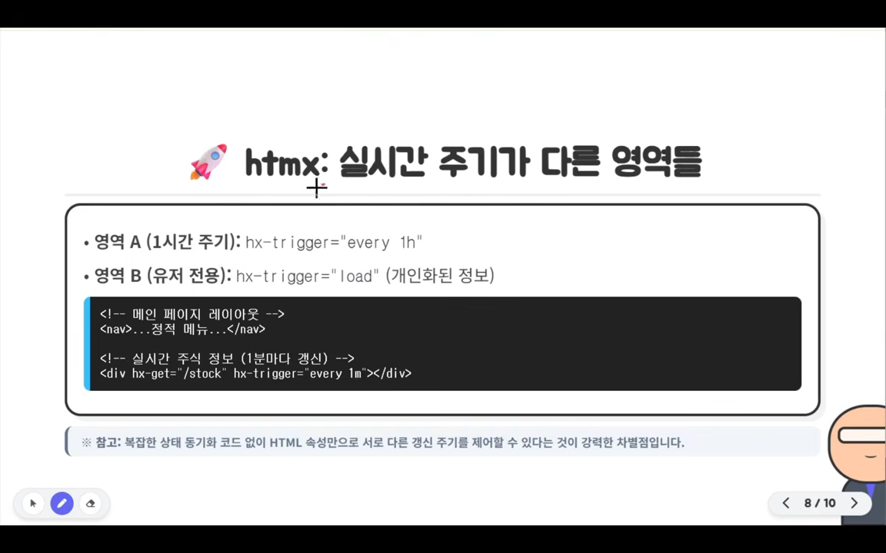
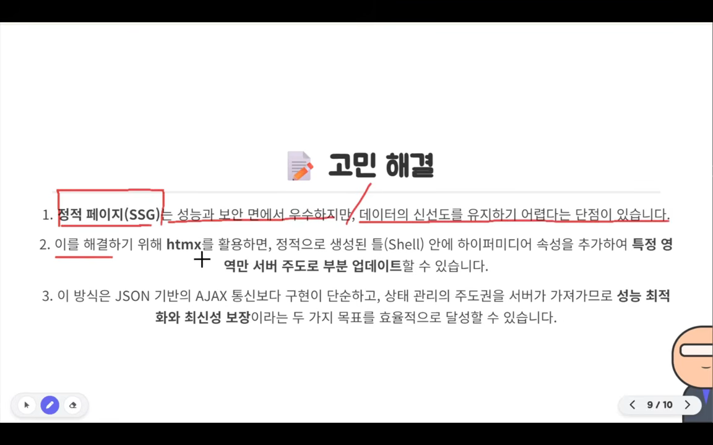

메인 페이지를 미리 구워 두기
모든 사용자는 메인 페이지부터 들어와요. 그래서 여러 페이지 중 메인 페이지 로딩만 빨라져도 사이트 전체가 빠르게 느껴지고 첫인상이 좋아져요. 보통은 브라우저 캐시나 Redis 같은 서버 메모리 캐시로 속도를 올리지만, 이 영상은 페이지 자체를 정적 파일로 만드는 방법을 다뤄요.
먼저 메인 페이지가 왜 무거운지 그림으로 보여 줘요. 가운데 페이지 틀 안에 GNB(Global Navigation Bar), 메인 배너, 랭킹, 공지 사항, 이벤트가 쌓여 있어요. 오른쪽의 랭킹 DB, 이벤트 DB, 외부 API(Application Programming Interface)에서 화살표가 각 칸으로 들어오고요. 사용자 요청이 올 때마다 이 연결을 전부 거쳐서 페이지를 조립하는 구조예요.

스케줄러가 HTML을 미리 만들어 둬요
아이디어는 메인 페이지를 서버에서 미리 정적 HTML로 렌더링해 두는 거예요. 다시 그린 그림에서는 아래쪽 스케줄러가 DB와 외부 API를 호출하고, 그 결과로 위쪽의 '메인페이지.html'을 create 화살표로 만들어 내요. 빨간 SSR(Server-Side Rendering) 상자는 이미 서버 사이드 렌더링 페이지가 있으면 스케줄러가 그 페이지를 호출해서 결과를 그대로 저장해도 된다는 뜻이에요.

이렇게 하면 사용자가 아무리 몰려도 매번 DB를 조회하거나 API를 부를 필요가 없어요. 이미 만든 파일을 바로 내주니 응답이 아주 빨라요. 다만 스케줄러를 하루에 한 번 돌린다면, 하루보다 짧은 주기로 바뀌어야 하는 영역이 문제가 돼요. 영상의 나머지는 이 문제를 푸는 이야기예요.
정적 페이지의 딜레마: 빠르지만 낡아요
슬라이드로 넘어가면서 발표자는 주제를 한 줄로 정리해요. 제목은 '정적 페이지(SSG(Static Site Generation)) + 동적 정보'이고, 부제는 '성능은 챙기고 데이터는 실시간으로'예요. 미리 렌더링한 페이지에 실시간 정보나 개인화 정보를 어떻게 넣을지가 오늘의 질문이에요.

다음 슬라이드의 노란 상자에 실제로 받을 법한 고민이 적혀 있어요. 속도 때문에 메인 페이지를 1일 주기로 미리 그려 뒀는데, 일부 영역만 실시간(또는 동적)으로 업데이트할 수 없냐는 질문이에요. 발표자는 여기서 영상을 멈추고 방법을 먼저 떠올려 보라고 해요.

빠르지만 낡아요
딜레마 슬라이드는 두 상자로 나뉘어요. 왼쪽 초록 상자는 성능 쪽이에요. 1일 1회 HTML을 만들어 두니 DB 조회 없이 바로 응답하고, 매우 빠르고 서버 부하도 낮아요. 오른쪽 빨간 상자는 신선도 쪽이에요. 모든 데이터가 1일 전 상태라 이벤트 마감이나 실시간 뉴스를 보여 줄 수 없고, 사용자 경험이 나빠져요. 이렇게 오래된 데이터가 보이는 걸 스테일 콘텐츠라고 해요.

결국 어떤 영역은 하루 주기로 충분하고, 어떤 영역은 그보다 훨씬 자주 바뀌어야 해요. 한 페이지 안에 갱신 주기가 다른 영역이 섞여 있다는 게 문제의 핵심이에요.
전통적인 해결책 두 가지
발표자는 htmx를 꺼내기 전에 흔히 쓰는 해결책 두 가지를 먼저 짚어요. 슬라이드 왼쪽 상자가 iframe, 오른쪽 상자가 AJAX(JS(JavaScript) Fetch)예요. 아래 참고 줄에는 AJAX 방식을 React 같은 프레임워크 없이 바닐라 JS로 짜면 유지보수가 매우 고통스럽다고 적혀 있어요.

iframe: 쉽지만 따로 노는 문서
iframe은 완전히 분리된 페이지를 메인 페이지에 끼워 넣어요. 구현이 단순하고 경계도 분명해요. 문제는 iframe 안이 독립된 문서라는 점이에요. CSS(Cascading Style Sheets), 레이아웃, 폰트가 바깥 페이지에서 자연스럽게 이어지지 않아요. 검색 엔진도 iframe 안 내용을 메인 문서의 일부로 제대로 평가하지 않는 경우가 많아서 SEO에 불리해요. 모바일에서는 높이 자동 조절, 스크롤, 반응형 대응이 번거롭고, 웹 접근성과 상태 공유도 어려워요. 그래서 광고 영역이나 외부 위젯에는 맞지만, 메인 콘텐츠 일부를 자연스럽게 움직이게 하기엔 구조적인 한계가 있어요.
AJAX + JSON: 유연하지만 코드가 늘어요
두 번째는 페이지가 뜬 뒤 JS로 AJAX 요청을 보내 JSON을 받고, 그 데이터로 DOM을 직접 그리는 방식이에요. 전통적인 클라이언트 사이드 렌더링이에요. 유연하고 복잡한 인터랙션도 만들 수 있어요. 하지만 React 같은 프레임워크 없이 바닐라 JS로만 짜면 코드가 지저분해져요.
더 큰 문제는 취지와 어긋난다는 점이에요. 서너 시간에 한 번만 바뀌는 정보인데도 페이지가 열릴 때마다 서버가 DB를 조회하게 되거든요. 정적화로 아낀 비용을 여기서 다시 쓰는 셈이에요.
| 방법 | 좋은 점 | 걸리는 점 |
|---|---|---|
| iframe | 구현이 단순하고 분리가 명확해요 | 디자인 통합, SEO, 모바일 레이아웃, 접근성, 상태 공유가 어려워요 |
| AJAX + JSON (CSR(Client-Side Rendering)) | 유연하고 복잡한 인터랙션이 돼요 | 바닐라 JS로는 코드가 지저분해지고, 요청마다 DB를 조회해요 |
htmx로 필요한 조각만 바꿔 끼우기
오늘의 주인공은 htmx예요. HTML 속성만으로 페이지 일부를 서버가 주도해서 갱신하게 해 주는 가벼운 라이브러리예요. 슬라이드의 'HTML 안의 HTML'이라는 표현이 이 성격을 잘 보여 줘요. 검은 코드 상자를 보면 div 하나에 hx-get="/realtime-news"와 hx-trigger="load" 두 속성만 붙어 있어요. 안쪽의 '로딩 중...' 문구는 서버가 보낸 HTML 조각으로 바뀌어요.

<div hx-get="/realtime-news" hx-trigger="load">
로딩 중... (서버가 HTML 조각으로 대체함)
</div>AJAX 방식과 가장 다른 점은 서버가 무엇을 돌려주느냐예요. 서버는 DB 조회 결과인 JSON이 아니라, 메인 페이지처럼 미리 렌더링해 둔 HTML 조각을 돌려줄 수 있어요. 프론트엔드는 받은 조각을 그 자리에 끼우기만 하니 JS 코드 없이 부분 갱신이 돼요.
하이브리드 아키텍처의 네 단계
발표자는 이 구조를 하이브리드 아키텍처라고 불러요. 슬라이드의 네 단계를 따라가 보면, 브라우저가 1일 전에 만든 정적 메인 HTML을 아주 빠르게 받고(1단계), htmx가 hx-trigger="load" 속성을 감지하고(2단계), 서버가 지정된 영역의 최신 HTML 조각만 만들어 응답하고(3단계), 결국 페이지 전체는 정적이지만 특정 박스만 실시간 정보로 바뀌어요(4단계).

영역마다 갱신 주기를 다르게
htmx는 갱신 주기가 다른 영역을 속성만으로 나눠요. 슬라이드 위쪽 두 줄을 보면, 한 시간마다 바뀌는 영역 A는 hx-trigger="every 1h", 사용자 전용 정보인 영역 B는 hx-trigger="load"로 페이지가 뜰 때 한 번만 받아요. 아래 코드 예시는 실시간 주식 정보를 every 1m, 즉 1분마다 갱신하는 경우예요.

정리: 전체를 다시 그리지 않기
마지막 정리 슬라이드는 세 줄이에요. 1번은 정적 페이지(SSG)가 성능은 좋지만 신선도를 지키기 어렵다는 것, 2번은 htmx로 정적인 틀(Shell) 안에 하이퍼미디어 속성을 더해 특정 영역만 서버 주도로 갱신한다는 것, 3번은 이 방식이 JSON 기반 AJAX보다 단순하고 상태 관리를 서버가 맡아서 성능 최적화와 최신성 보장을 함께 이룬다는 거예요.

동적 조각도 미리 구워 두기
발표자는 끝에 한 가지를 더 제안해요. 메인 페이지는 하루 단위로 갱신해도 되고, 동적인 부분은 몇 시간마다 바뀌면 되는 경우예요. 그러면 동적인 조각도 메인 페이지처럼 서버에서 미리 렌더링해 둘 수 있어요. htmx가 불러오는 대상도 정적 파일이 되니, 브라우저는 정적 파일 두 개만 받아 가면 돼요. 아래 그림은 이 구조를 한 장에 옮긴 거예요.
영상은 이렇게 마무리해요.
전체를 다시 그리지 마세요.
— 영상 10:40